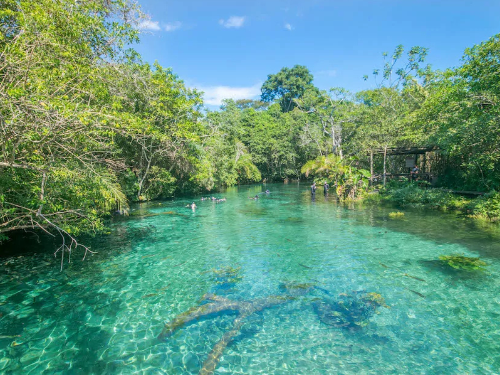

O estado de Mato Grosso do Sul está localizado na região Centro-Oeste do Brasil e tem como capital a cidade de Campo Grande. A economia do estado é baseada principalmente na agropecuária, com destaque para a criação de gado e a produção de grãos. Mato Grosso do Sul também é conhecido por suas belezas naturais, especialmente o Pantanal, uma das maiores áreas alagadas do mundo, e a cidade de Bonito, famosa pelo ecoturismo e pelas águas cristalinas de seus rios.

Voltar